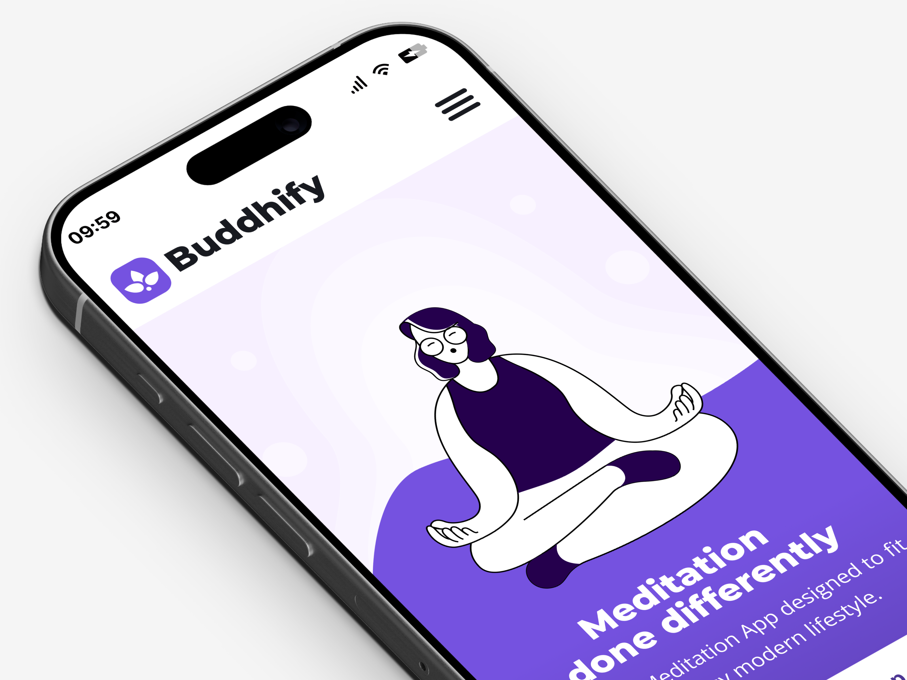
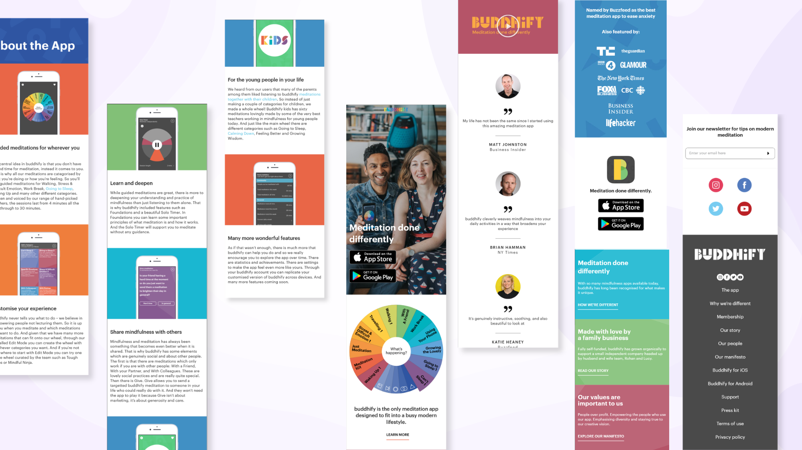
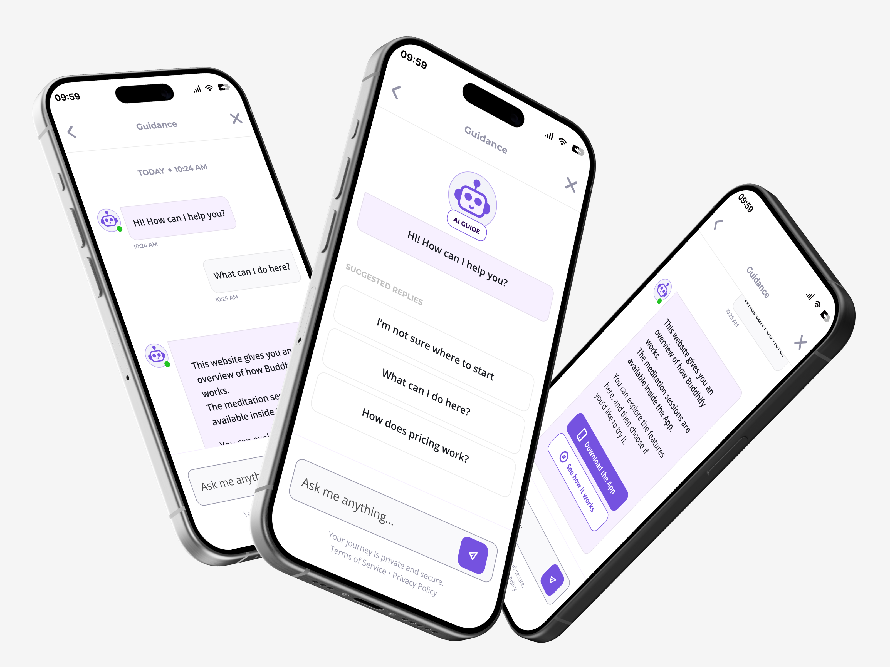
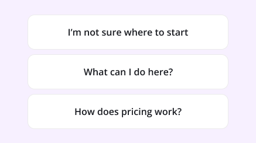
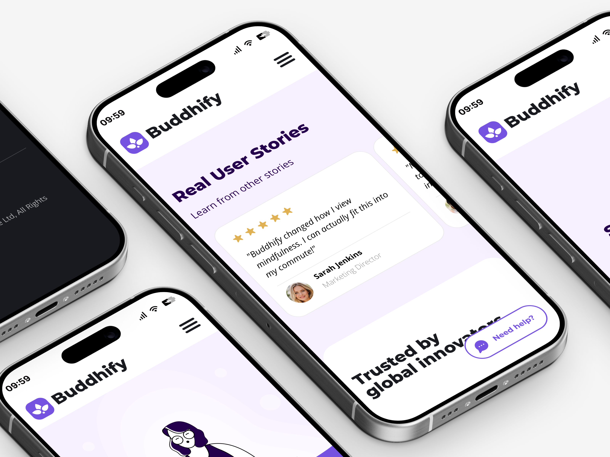

An AI conversational assistant for Buddhify
A UX case study exploring how a contextual AI assistant can improve clarity, accessibility and decision-making in a mobile meditation experience — reducing cognitive load instead of adding another layer of noise.
UX Designer — analysis, concept design, content strategy, UX writing, interaction design.
Self-initiated UX concept exploring conversational AI in an existing product.
Buddhify mobile website — the touchpoint that drives users to download the app.
UX analysis, chatbot concept, tone of voice guidelines, UI mockups, interaction flows.
- 01Context
- 02Problem
- 03Opportunity
- 04Solution
- 05Content strategy
- 06Interaction
Meditation for busy modern lifestyles
Buddhify is a meditation platform designed for people with busy modern lifestyles, offering short sessions adaptable to different moments of the day.
The mobile website communicates the product's values, mission and unique features — with one ultimate business goal: guiding users to download the app.

Weak hierarchy, heavy reading, high effort
The primary UX issue relates to weak information hierarchy and complex readability on mobile, which leads to:
- 1High cognitive load — long-form content forces users to process too much at once.
- 2Unclear value proposition — the true value of the product is hard to grasp quickly.
- 3Opaque access & pricing — no immediate clarity on how content is accessed and what it costs.
- 4Navigation frustration — scroll-heavy layouts create disorientation on mobile.

A contextual assistant, not another feature
The design opportunity focuses on reducing cognitive effort and enhancing immediate comprehension by offering an alternative to traditional scroll-heavy layouts — a conversational layer that meets users exactly where they get lost.
A contextual AI chatbot, one tap away
I designed a contextual AI chatbot integrated into the mobile site, accessible via a persistent floating action bubble. Its core functions:
- aSummarizing long-form content blocks on demand.
- bInstant answers to FAQs — pricing, app access, usage.
- cHighlighting key information strategically.
- dMicro-step decision support through guided flows.

Words designed to calm, not to sell
Mindfulness oriented
Designed to be fully coherent with the brand's core ecosystem.
Scannable, progressive, honest
Short scannable sentences and direct phrasing · progressive disclosure of complex details · strategic quick replies and guided flows · no overly promotional tone.

Help that waits to be asked
Access is granted via a persistent floating bubble reading "Need help?". It relies entirely on manual user activation, guaranteeing targeted support during moments of disorientation — most notably after heavy scrolling, or when actively looking for key information like pricing tiers.

A cognitive support layer
The implementation of the contextual assistant introduces value across the whole experience: it drastically reduces cognitive load, improves immediate comprehension of the product ecosystem, provides a more guided and fluid navigation, and mitigates mobile drop-off caused by frustration.
The assistant is not a promotional tool — it's an intentional cognitive support layer, built exclusively to enhance the user's comprehension of the product.